Astral Surge
Daniel Vishnevsky
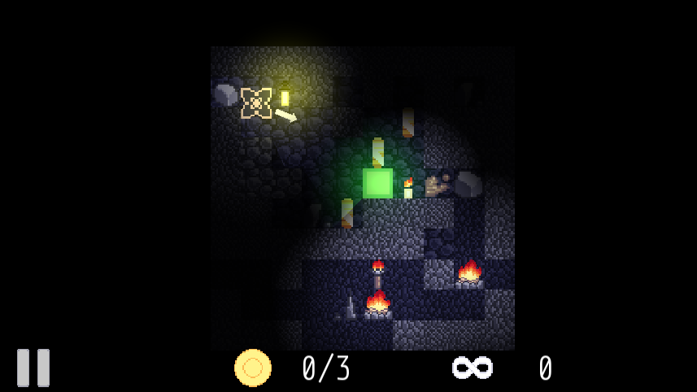About
Astral Surge is a top-down 2D speedrunning game focused on collecting all coins in time while evading traps and enemies. Features a fully-fledged level editor and endless mode.
Features
Astral Surge has a ton of features, some I won't be able to recall. It had a customization system with two colors and a cube just like in Geometry Dash. It had a whole level editor available to the player with all blocks, enemies, coins and what not, it had 4 different brush modes and you were able to try the level out before saving it. There was also an endless mode with different customizable themes and generation types. Lastly, I think, it had the default mode, where you were able to play the built-in levels or your own levels from the level editor. Levels included enemies with different AI, coins, background and the foreground. The only goal was to reach the finish line, but to get any stars, you had to collect coins too. Just rememberred that it had dynamic lighting and an optional fog as well.
Astral Surge was basically a whole game engine. The most fun I got while developing it was building themes in endless mode, new levels or player icons and colors, all were available to the user to edit freely. I remember taking multiple days to design some of the hardest possible levels and letting my friends try them out. None completed them. There were a ton of JSON files anyone could go and edit to create their own game from the engine. I remember enemies having about 12-15 different AI modes, not to mention all of the parameters!
Development
Note that all of this is coming from my head, I'm not 100% sure about everything and anything written here. I'm pretty sure I started developing Astral Surge somewhere in the end of 2024, about 3 months after starting coding in C++. Just like Pong, I originally made it with pure SFML, but then later switched to using my SFML-based library CX. Since this was my second game, adding new features was really hard, this was too big of a project for me to handle, but I kept going forward somehow. To this day I don't understand how. I kept implementing new features one-by-one like levels, saves, customization, level editor and so on. This is one of those projects I look back at and think about how ancient Egyptians built pyramids. I barely knew how to code and it shows when reading my old code, it has too many classes, namespaces and other useless things slowing the game down.
I documented my whole journey on my old Youtube channel. Any other footage or the source-code is not available anywhere else, I just didn't know how to use Git at that point. After this project I got really burnt out because of the sheer scale. I took a month break from coding and went straight in. Since then I kept working on CX and so the current code is not stable nor compilable due to deprecated features. I might revive this in the future, this is also the reason the gallery is so dry.
Also during the making of this game, I learned to do pixel art. Before I wasn't able to draw anything that well, but I learned a lot from just doing it. That's also the reason I use Krita, I just randomly chose it during the making of this game and I haven't bothered to switch, since I'm really good at using it now and I don't need to. I learned color theory and creating palettes as well. I'm pretty proud with the art I've done, especially the newer 64x64 industrial art (seen in endless mode specifically).
Gallery
 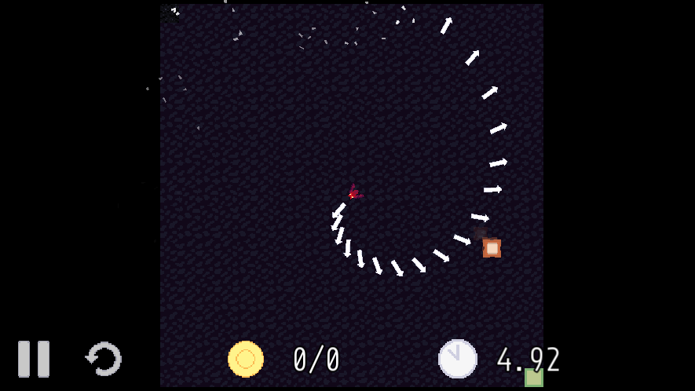
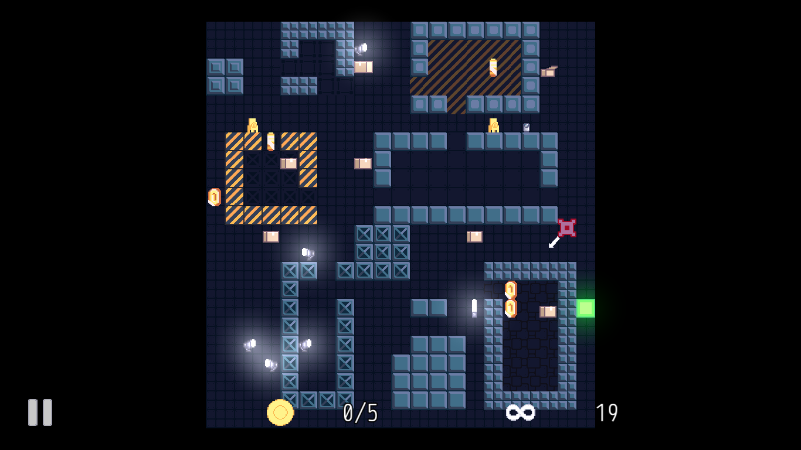
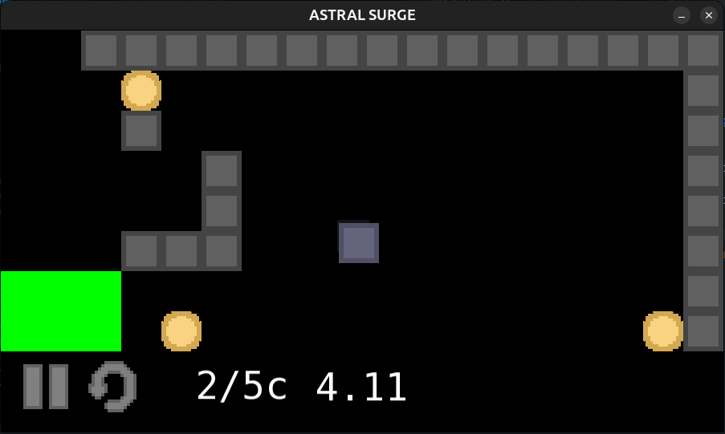
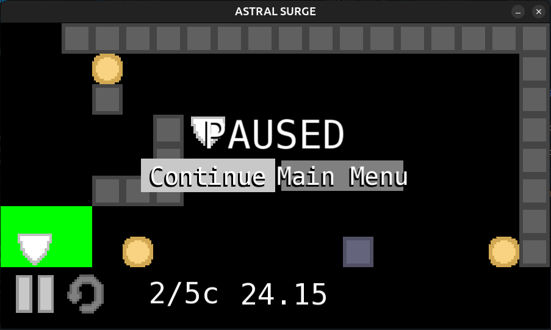
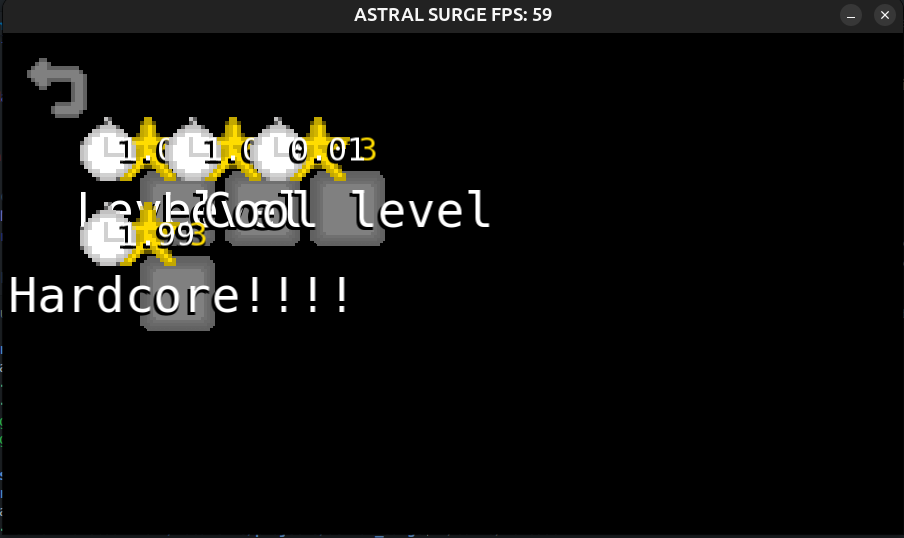
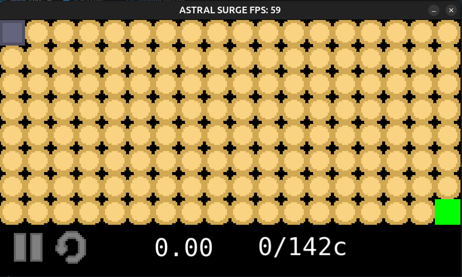
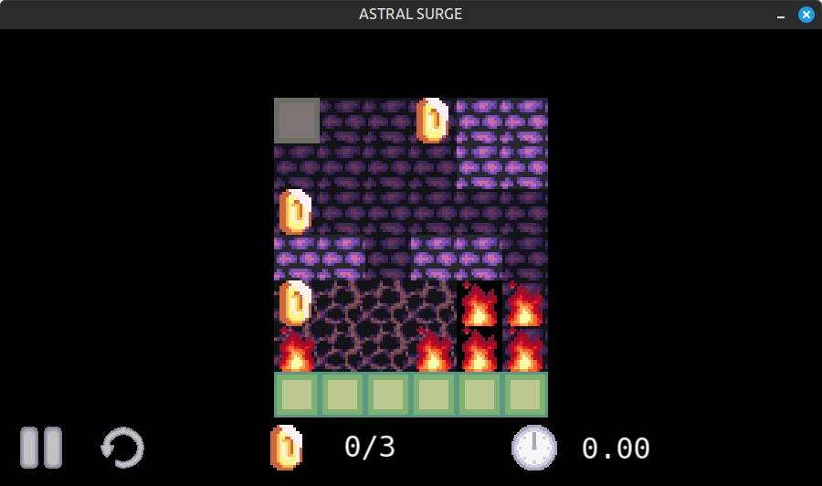
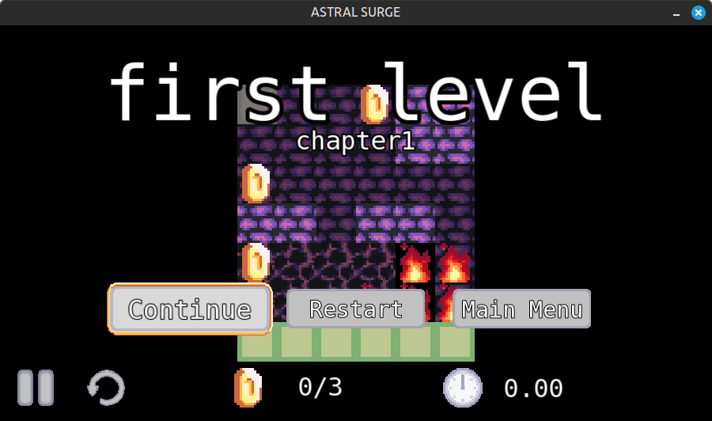
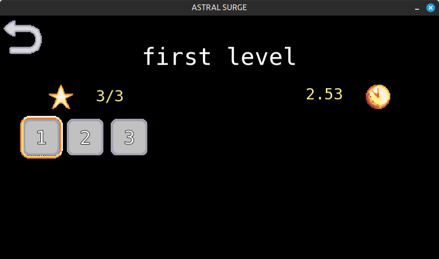
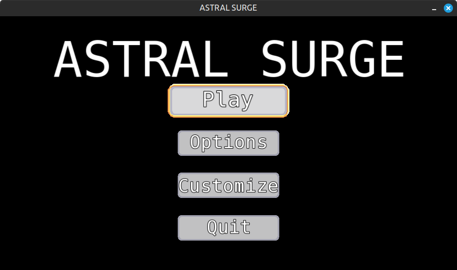
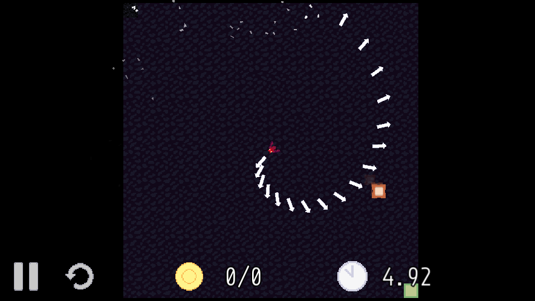
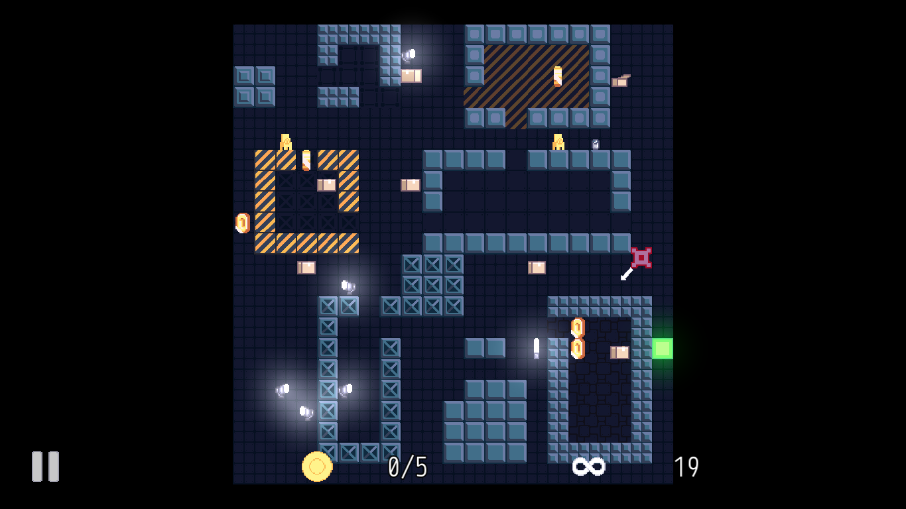
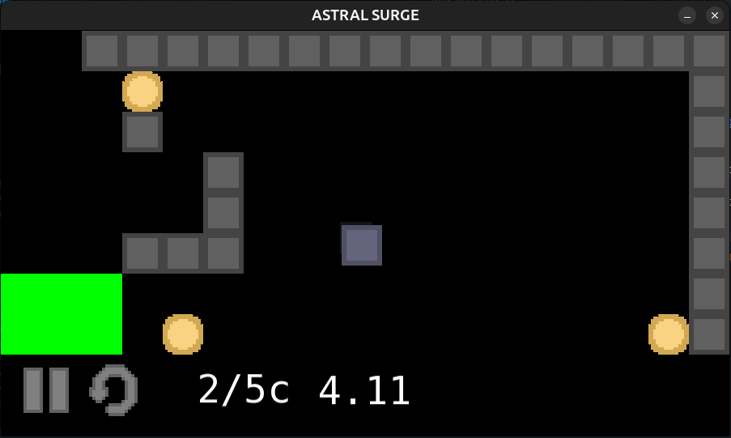
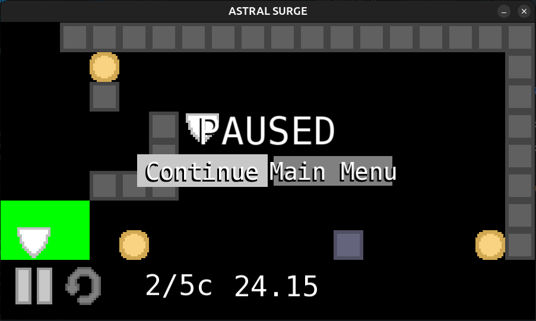
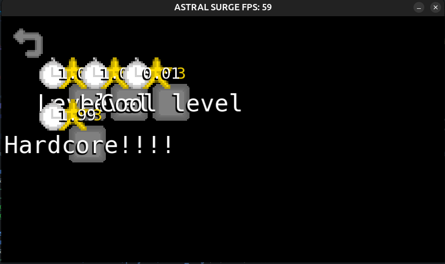
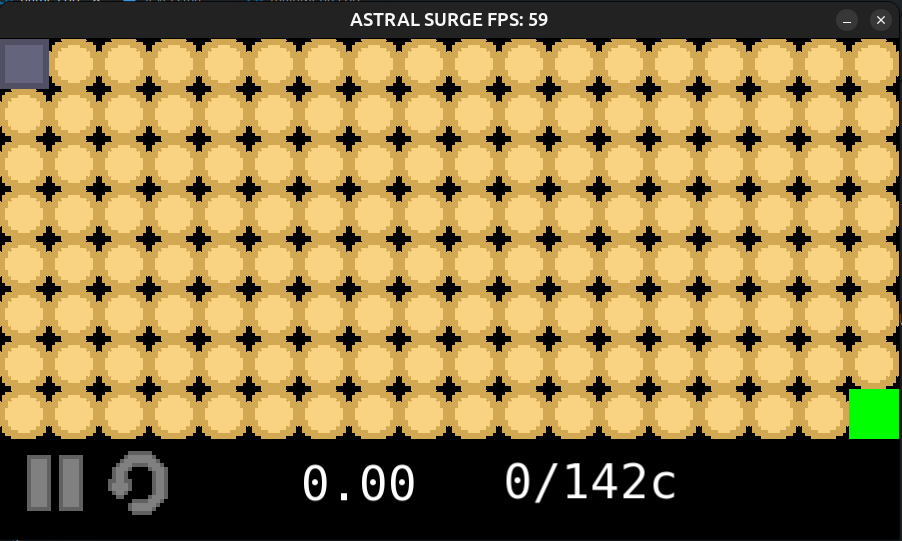
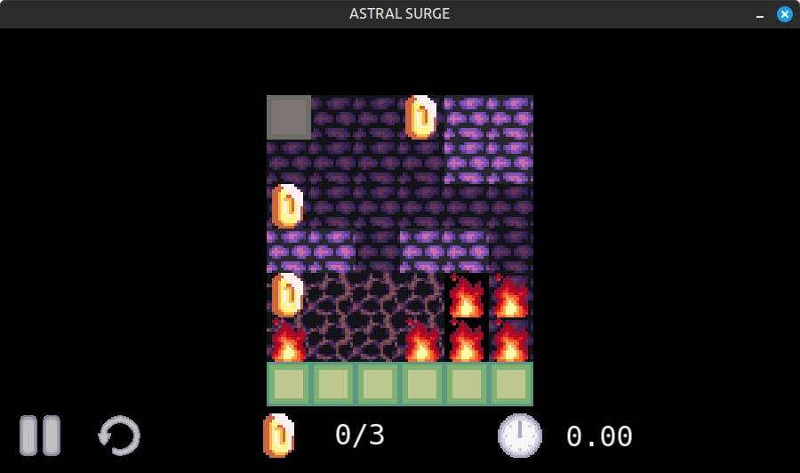
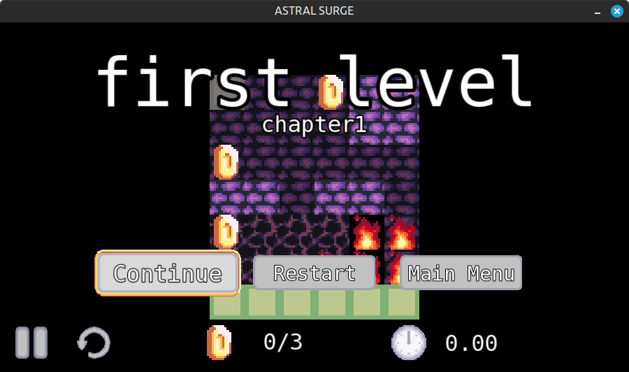
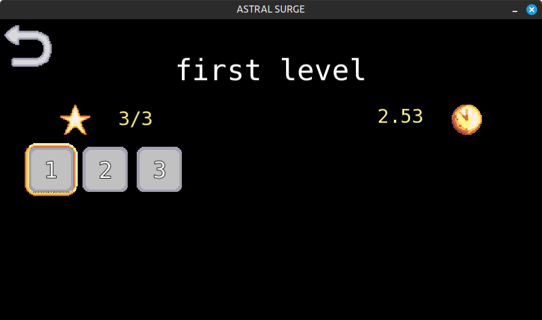
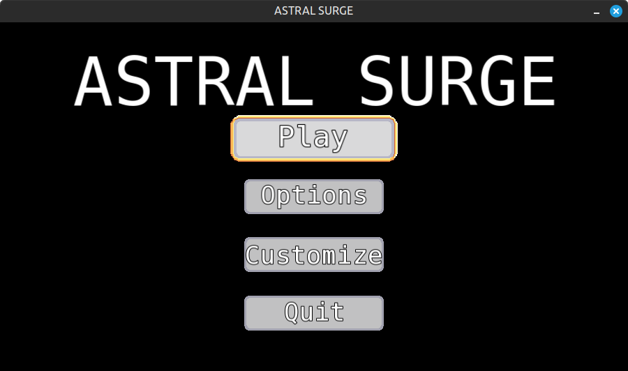